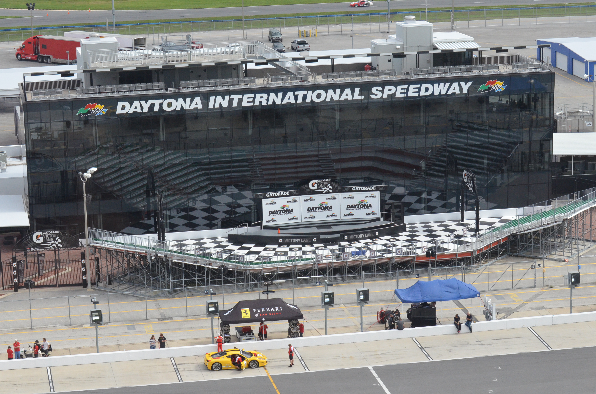
Biello edges out Eddison for a second consecutive Tarhoska win
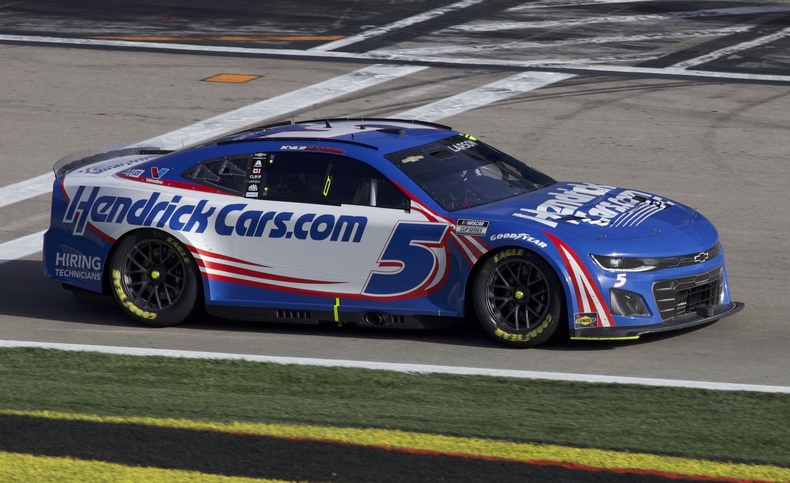
Thealex after Naltanio's final lap blunder: "I misjudged really badly"
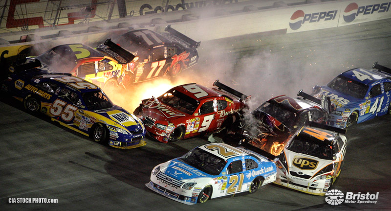
The Big One hits at Vegas, takes out several top contenders
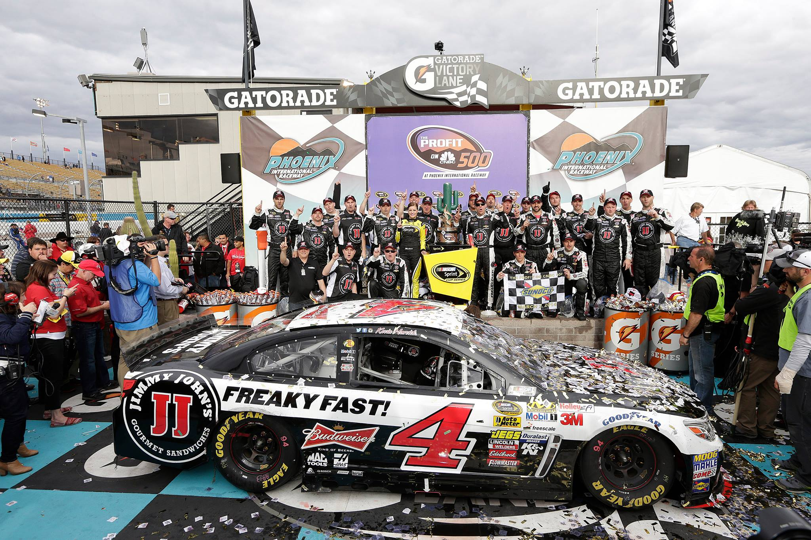
Dan Jags "in disbelief" after achieving first win at Houseberg
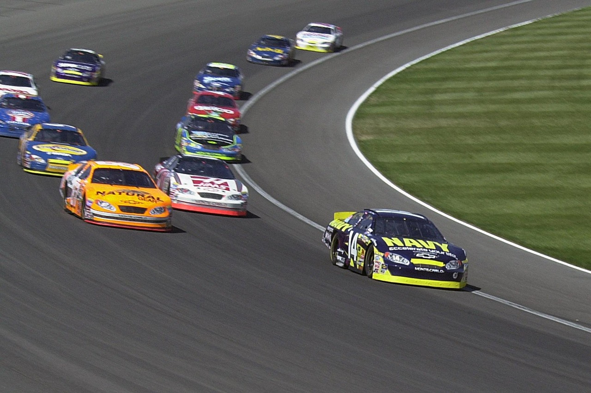
"Finally time for something like that," says Jace after Romasca sweep
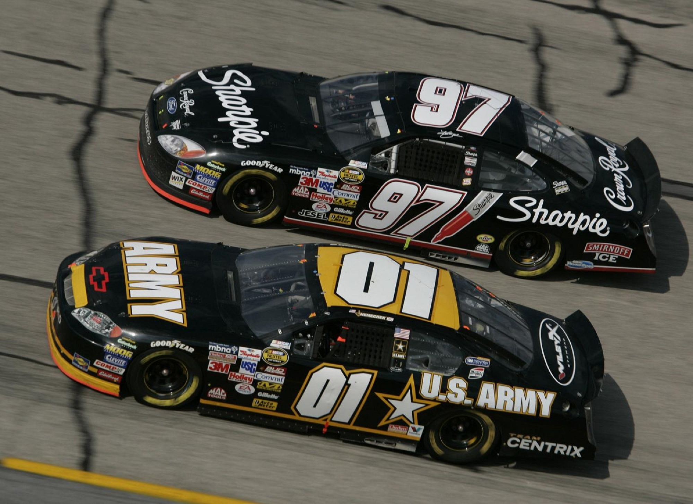
Mulder vs. Keala: a Gemspark battle for the history books
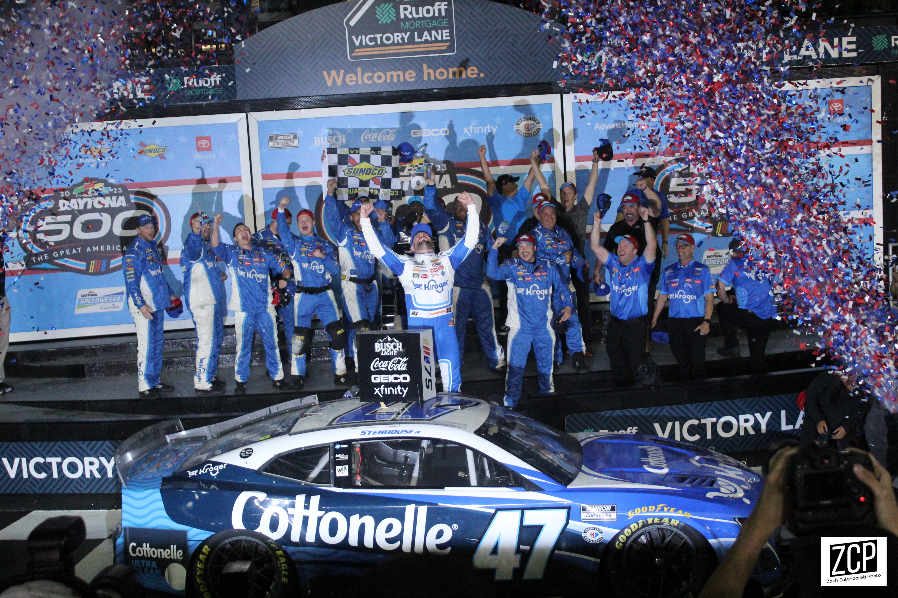
Teika takes the tequila as SCRAFF debuts in Chalcoxia
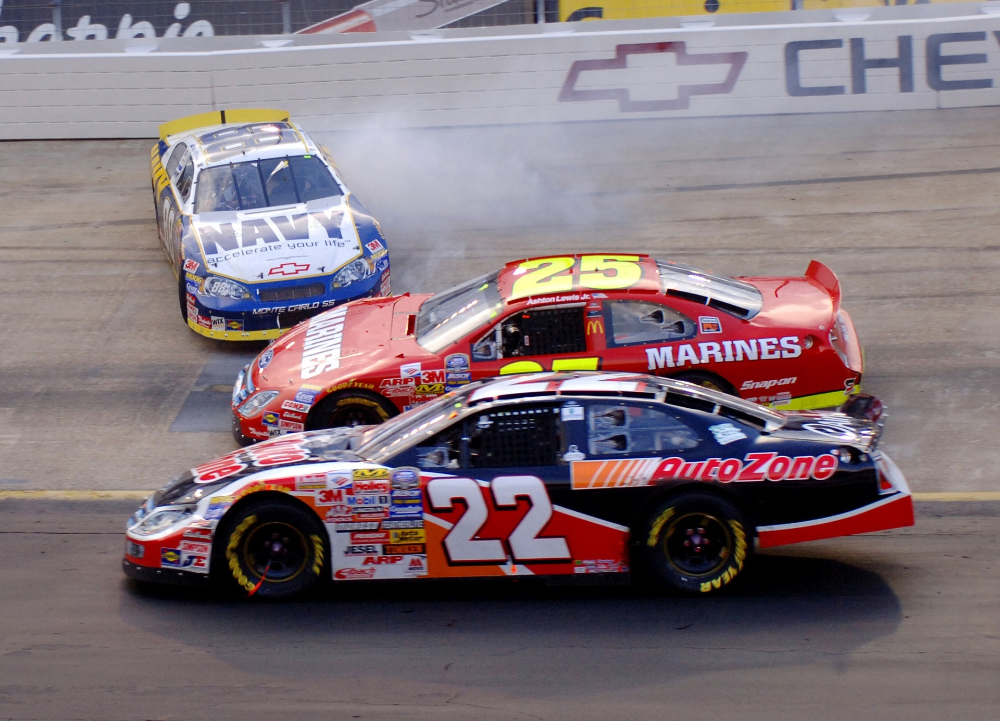
Ohn clinches final playoff spot back at Tarhoska, knocking Nate Raptor out
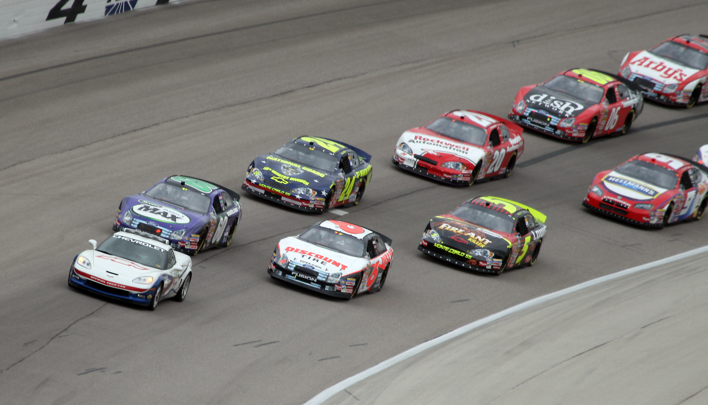
Britts speaks out after New Sandford win: "It's a massive weight off my shoulders"
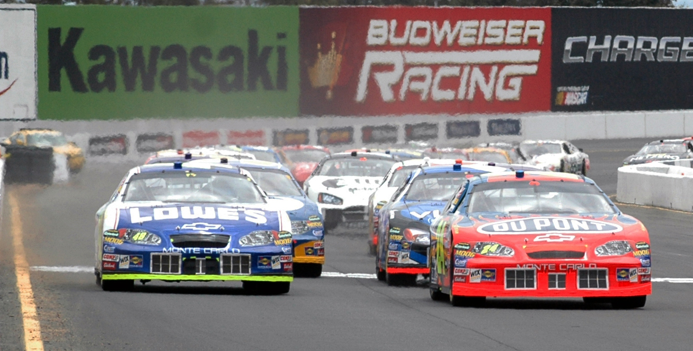
Tyson returns from Almirola devastation to sweep Chiseton, setting up final four
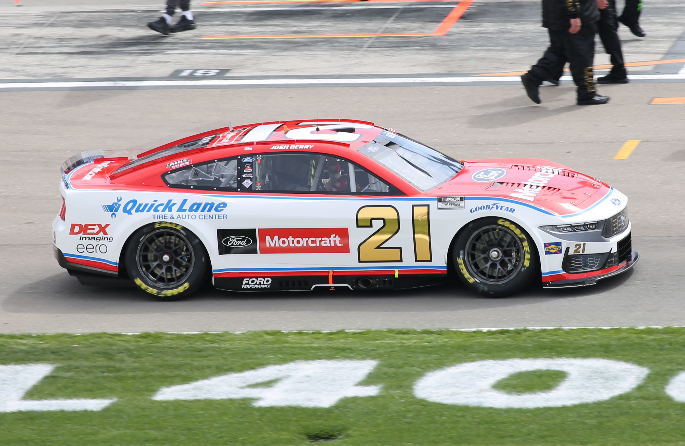
Heartbreak in Falco: Last minute caution gives Bearsley chance to snatch win